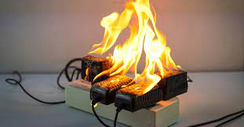
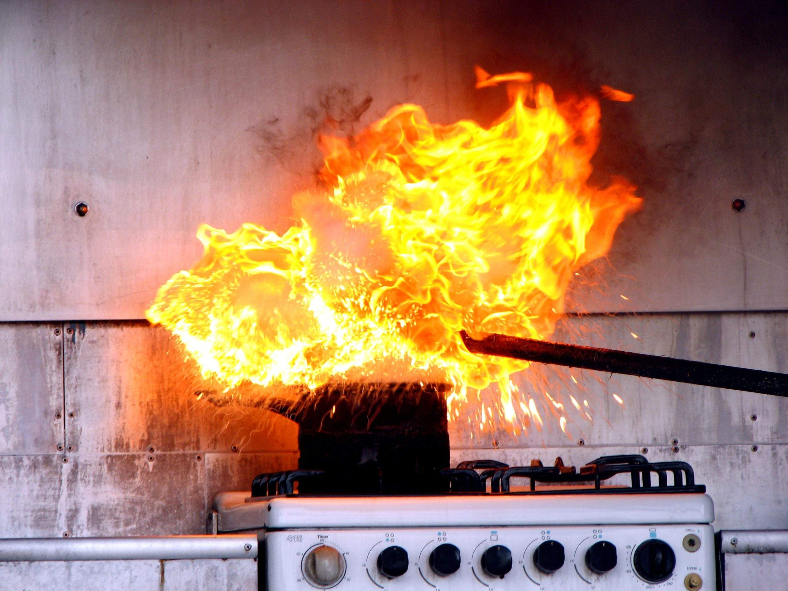
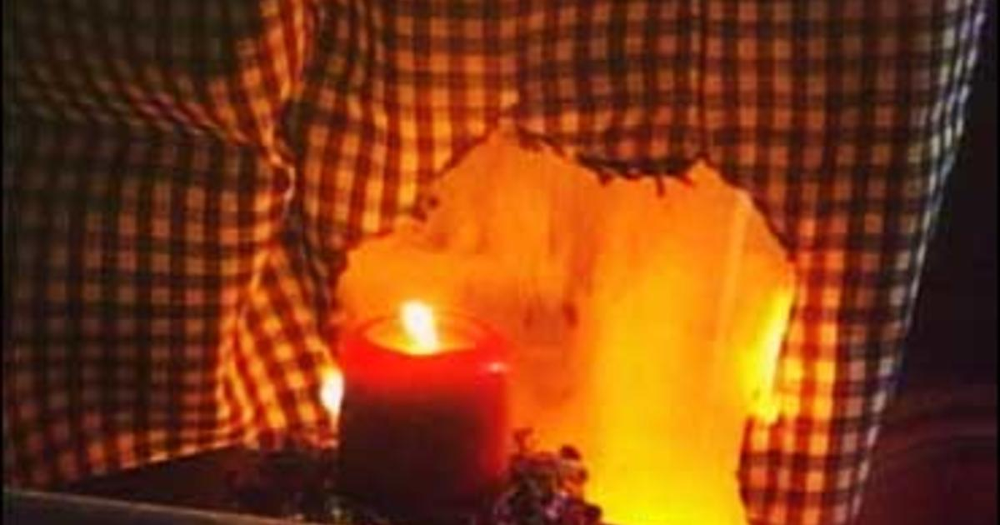
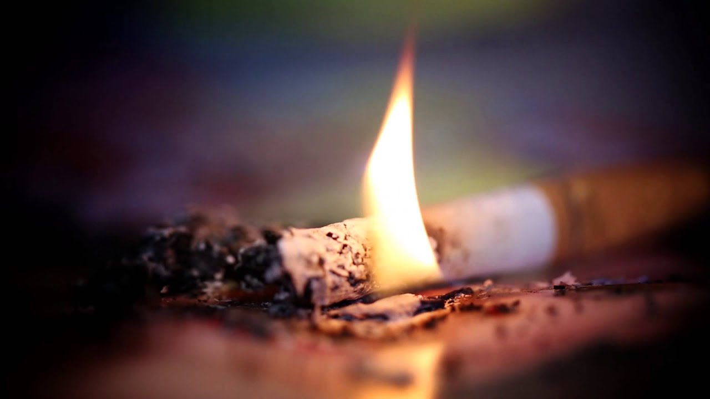

| 
Electrical Fire |
Now, one of the main causes of fire accidents is due to mismanagement of electricity in your home. To prevent this, do not overload your plugs. Never use electrical appliances that smell like they have been burnt or when they cause sparks when plugged in. |
| 
Kitchen Fire |
When cooking, it is best to make sure you have no flammable or combustible substances/items in the cookplace. You also have to check your LPGs that you use for cooking if they have any leaks with them, and also make sure to keep them out of reach from children and pets. |
| 
Candle Fire |
When lighting candles, be sure to place them far from any flammable substances/surfaces/items/fabrics. (i.e wood, curtains and rubber toys.) Place them out of reach children and pets too. |
| 
Cigarette Fire |
Carelessly disposing cigarettes in a not proper way can also start fire. I am not telling you to smoke or anything but for those that do, be sure to take out your cigarettes appropriately to prevent any accidents. |